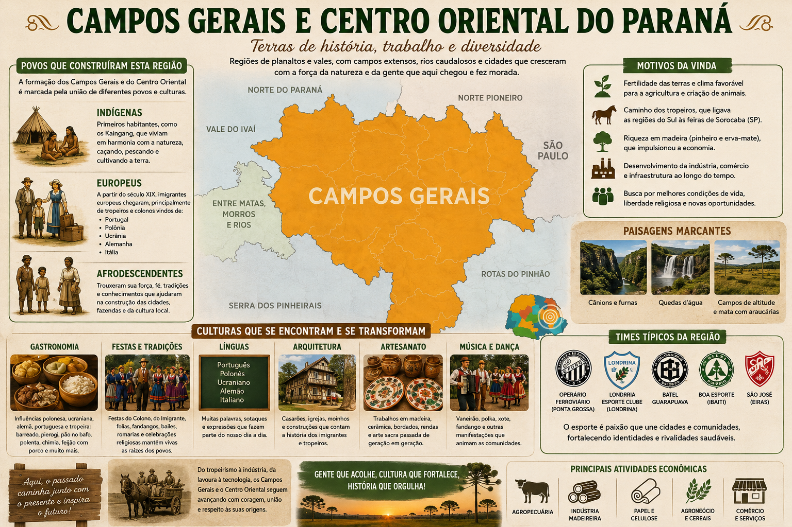

Sobre os Campos Gerais e Centro Oriental
A região dos Campos Gerais é uma área geográfica e socioeconômica localizada no centro-leste do estado do Paraná, marcada por paisagens de campos nativos, relevo de planalto e grande relevância histórica e econômica. A imagem e o áudio apresentam informações sobre imigrações, migrações e sua cultura.
Por: Luiza Binsfeld